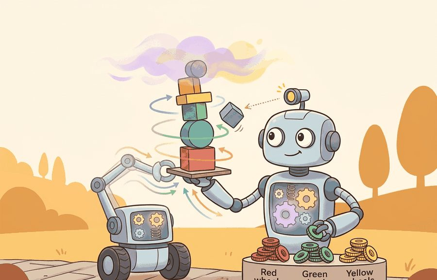
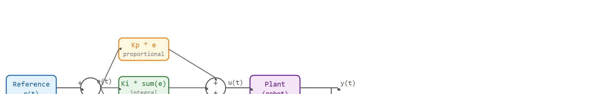
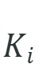
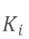

"P reacts to now, I confesses to the past, D worries about what comes next. Together they argue until the error is small enough to ignore."
A PID Tuner at 2 AM

Figure 7.3A: A PID controller block diagram for joint position control, showing the proportional, integral, and derivative terms summed into a torque command, with tuning intuition for each gain.
This section assumes familiarity with error dynamics and the concept of overshoot introduced in section 7.2. The three-term structure developed here becomes the inner control loop that learned planners command in section 21.2 and section 26.1, so the gain-tuning intuition from section 7.3 directly supports understanding why those higher-level policies need a stable, fast inner loop beneath them.
Big Picture
A robot arm reaches for a cup and overshoots by two centimeters. The neural policy that planned the motion is already finished; the damage happens in the next 20 milliseconds, at the actuator level, where no learned model is fast enough to intervene. That gap is exactly where PID lives. In modern embodied AI, PID controllers are the always-on safety net beneath every learned planner: cheap, interpretable, and capable of sub-millisecond correction. A reader who works through this section will be able to read a PID response curve, diagnose oscillation or drift from the three gain values alone, and tune a joint controller by feel rather than formula.
Three numbers, written down by hand in under a minute, decide whether a robot arm settles gently onto a cup or rings like a struck bell: that is the entire bargain of PID control. Learning to read those three gains by feel is the skill that matters here. The section defines the object of study, connects it to the agent loop, then tests it with a compact implementation.
The key question is concrete. On a Franka Emika Panda joint controller running at 1 kHz, the agent knows the commanded reference angle, observes the encoder position (and its filtered velocity), and the only action available is a single torque value clamped to the joint's limit (87 Nm on the large links, 12 Nm on the wrist). The evidence that tuning worked is a logged step-response trace, where a step response is the controller's reaction over time to an instantaneous jump in the reference command: rise time under 50 ms, overshoot below 5 percent, and zero steady-state drift after the integral term settles. Everything in this section reduces to making that one torque-per-millisecond decision trustworthy.
Action Is The Test
A representation earns its place when it changes the measurable action interface. In PID control, intuition and tuning, the reader should keep asking which decision becomes easier, safer, or more reliable.
Theory
Consider a robotic arm holding its end-effector at a target joint angle. The motor driver needs a torque command every millisecond. A neural policy trained offline cannot react to an unexpected cable-friction spike in that loop; a full dynamics model is too slow to invert online. PID solves this exactly: it reads the current angle, computes how far off it is, and issues a corrective torque in under a microsecond, with no model needed. That is the role PID fills in embodied AI: fast, interpretable, actuator-level error correction that runs inside the loop while slower learned planners operate above it. Figure 7.3A sketches this controller as a block diagram, summing the proportional, integral, and derivative terms into a single torque command for joint position control.
For PID control, intuition and tuning, the practical design rule is to make the interface inspectable before optimization begins: inputs, outputs, units, latency, bounds, and failure labels should all be visible in the saved artifact.
PID control is useful because it gives three readable levers before a learned policy enters the loop. The proportional term reacts to the current error, the integral term removes persistent bias, and the derivative term resists fast changes that would otherwise overshoot. A tuning pass should change one lever at a time and record rise time, overshoot, settling time, steady-state error, saturation events, and noise sensitivity. The block diagram in Figure 7.3B below traces how these three terms combine: the error signal $e(t)$ feeds all three terms in parallel, their outputs sum into a single command $u(t)$, and the measured plant output feeds back to close the loop, where the plant is the physical system being controlled (here the robot joint and its actuator).

Figure 7.3B: PID closed-loop feedback diagram. The error e(t) = r(t) minus y(t) feeds the three parallel terms Kp*e, Ki*sum(e), and Kd*de/dt; their sum forms the command u(t) that drives the plant; the measured output y(t) feeds back to the summing junction to close the loop.
Why proportional alone is not enough
With the three parallel terms now wired together in the loop, the next question is why two of them, integral and derivative, are needed at all rather than just turning the proportional gain up; the answer begins with the bias that proportional control alone can never remove. Persistent bias matters in embodied AI because real actuators always carry unmodeled loads: a robot arm fights gravity at every pose, a mobile base experiences floor friction that differs from the simulator, and a soft gripper compresses against an object with force the model never captured. Proportional control alone reaches a steady state where the remaining error is just large enough to produce the torque that balances the load. For a representative joint gain in this range, that residual is roughly 0.5 degrees of joint error on a 1 kg arm held horizontal. On a 5 kg arm at the same gain, the residual scales with the load and typically grows to roughly 2.5 degrees of drift, enough to miss a cup by three centimeters at the wrist. That leftover error is not a tuning failure. Physics forces it structurally. It accumulates into position drift, grasp slip, or trajectory deviation. A learned policy above the loop cannot recover without reissuing corrective commands every cycle.
Before reading on, consider: why not raise the proportional gain until the residual error is negligible? Try it on any real actuator. The arm begins to oscillate, and the oscillation worsens with every increase. You are chasing a structural physics constraint with a lever that also destabilizes the system. That tradeoff is what the integral term was designed to escape.
The integral term eliminates this by summing error over time. Each control cycle adds the current error, multiplied by the timestep, to a running accumulator. The controller multiplies that accumulator by $K_i$ and adds it to the command. As long as any error remains, the accumulator grows, which grows the command, which pushes the plant closer to the reference until the error reaches zero and the accumulator stops increasing. At that point the integral term is holding exactly the constant torque needed to balance the persistent load, freeing the proportional term to respond only to transient deviations.
Integral windup is like pressing harder on a stuck accelerator pedal. While the car is blocked in snow, you keep pushing because the speedometer still reads zero, building up foot force that was never delivered. The moment the wheels grip, all that stored force launches the car forward far past the speed you wanted. The anti-windup clamp is the rule: stop pressing once the pedal is already floored, because additional force cannot go anywhere and will only cause a surge later.
PID Tuning Recipe
Start with $K_i=0$ and $K_d=0$, raise $K_p$ until the response is fast but not oscillatory, then add a small $K_d$ if overshoot is too high. Add $K_i$ last, only when a steady bias remains, and clamp the integral accumulator whenever the actuator saturates. This order keeps proportional behavior, damping, and bias correction separate enough to debug.
Mechanism
The mechanism in PID control, intuition and tuning is the contract between representation and action. Name what enters the module, what leaves it, which assumptions make that transformation valid, and which log would reveal a bad handoff.
Worked Example
PID has three classic failure modes, and each one is reproducible in a few lines on the same 1D mass. Code Fragment 7.3.1 exposes all three: integral windup (a large

keeps charging while the actuator saturates, then overshoots), derivative kick (a step change in the setpoint makes spike, so a derivative computed on the error fires a huge first command; Code Fragment 7.3.3 later walks through this arithmetic by hand), and derivative noise (differentiating a noisy measurement amplifies the noise). The fixes are an anti-windup clamp and computing the derivative on the measured output rather than on the error. Derivative noise itself is typically tamed with a first-order low-pass filter on the derivative term (for example, filtering $de/dt$ at a cutoff well below the control rate) before multiplying by $K_d$; this trades a small amount of phase lag for a large reduction in high-frequency chatter, and is the standard third guard alongside the anti-windup clamp and derivative-on-measurement shown below. The scale of the difference is not subtle: switching to derivative on measurement, not on error drops the first issued command from 260 to 10, a 26-fold reduction, before any other parameter changes.
importnumpyasnpm,dt,T=1.0,0.02,5.0n=int(T/dt)u_max=6.0defrun(kp,ki,kd,anti_windup=True,deriv_on_meas=False,ref=1.0):x=v=ei=0.0e_prev=y_prev=0.0# e_prev = 0 so the setpoint step shows the kickovershoot,first_cmd=0.0,Noneforkinrange(n):y=x# measured positione=ref-yei_t=ei+e*dt# Derivative on measurement avoids the spike when the setpoint jumps.de=-(y-y_prev)/dtifderiv_on_measelse(e-e_prev)/dtu_unsat=kp*e+ki*ei_t+kd*deu=float(np.clip(u_unsat,-u_max,u_max))if(notanti_windup)or(u==u_unsat):# anti-windup clampei=ei_tiffirst_cmdisNone:first_cmd=u_unsatx+=v*dt;v+=(u/m)*dtovershoot=max(overshoot,x-ref)e_prev,y_prev=e,yreturnx,overshoot,first_cmdxf,ov,_=run(10,3,5)print(f"tuned : final={xf:.3f} overshoot={ov:.3f}")_,ov_off,_=run(10,30,5,anti_windup=False)_,ov_on,_=run(10,30,5,anti_windup=True)print(f"windup off/on : overshoot {ov_off:.3f} -> {ov_on:.3f} with anti-windup clamp")*_,kick_e=run(10,3,5,deriv_on_meas=False)*_,kick_m=run(10,3,5,deriv_on_meas=True)print(f"setpoint step : first command {kick_e:.1f} (deriv on error) vs {kick_m:.1f} (deriv on measurement)")
tuned : final=1.034 overshoot=0.116
windup off/on : overshoot 0.882 -> 0.599 with anti-windup clamp
setpoint step : first command 260.1 (deriv on error) vs 10.1 (deriv on measurement)
Code Fragment 7.3.1: the anti-windup clamp cuts overshoot from 0.88 to 0.60 when

is large and the actuator saturates, while moving the derivative onto the measurement drops the first command from 260 to 10, removing the derivative kick at the setpoint step. These two guards, both visible in the run() function above, belong in every production PID loop.
In ROS 2 control's PidController, set use_feedforward_command: false and enable derivative_on_measurement in the YAML hardware interface config rather than patching the derivative term by hand. This single parameter switch eliminates the setpoint-step kick that produces the 260-unit first command shown above. If you are using python-control's pid_designer, note that it returns continuous-time gains; discretizing with sample_system(sys, dt, method='bilinear') before deploying avoids gain inflation at fast sample rates, which otherwise mimics integral windup even when your clamp is correct.
Library Shortcut
The fragment should expose proportional, integral, and derivative terms separately, including windup and derivative noise. ROS 2 control and hardware logs then show whether tuning survives saturation and delay.
Practical Recipe
Write the observation, action, and success metric before choosing a model.
Build a baseline that is simple enough to debug by inspection.
Add the library implementation only after the baseline behavior is understood.
Record failures as structured cases: perception error, state error, planning error, control error, or evaluation error.
Run at least one perturbation test before trusting the result.
Common Failure Mode
The common mistake in PID control, intuition and tuning is to celebrate the component score before checking the closed-loop handoff. The failure usually appears at the boundary: stale state, wrong frame, delayed action, saturated actuator, or metric that ignores the real task cost.
Gains tuned in simulation do not transfer directly to hardware, a manifestation of the broader reality gap. Real hardware adds joint friction, motor backlash, and communication latency that simulation underrepresents, shifting the effective plant dynamics enough to make a stable simulated controller oscillate or saturate. Treat simulation gains as a starting point. The derivative gain in particular usually needs a 30 to 50 percent reduction to absorb latency and sensor noise. Run a short hardware step-response test, with all three terms logged separately, before any deployment.
Gains that look stable on a screen are only a hypothesis; the hardware step-response test is the verdict.
Practical Example: Quadrotor Altitude Hold
A quadrotor holding 1.5 m altitude uses a vertical-velocity PID with $K_p = 4.0$, $K_i = 0.8$, $K_d = 1.2$ (values from the PX4 default parameter set for a 500 g airframe). The integral term removes the steady hover bias caused by battery voltage sag; the derivative term damps the bounce when a gust pushes the vehicle up and motor thrust overshoots. Logging throttle commands, Inertial Measurement Unit (IMU) vertical acceleration, and integral accumulator value together reveals whether a sustained oscillation comes from a noisy accelerometer (derivative problem) or from a slow bias that the integrator is fighting (windup risk). This is the same diagnostic loop that applies to any joint-level PID on a robot arm, a wheel-speed controller on a mobile base, or a temperature loop in a soft actuator.
That same nested-loop diagnostic, scaled from a single quadrotor to an entire open-source autopilot, is exactly what production flight stacks automate.
Real-World Application: ArduPilot flight stack
Every multirotor running ArduPilot or PX4 flies on nested PID loops (several PID controllers chained so the output of one becomes the reference setpoint for the next, fastest loop innermost): an outer position loop feeds setpoints to an attitude loop, which feeds a rate loop running at up to 8 kHz on the gyro. ArduPilot ships an Autotune mode that wiggles each axis in flight, measures the step response, and sets the rate-loop gains automatically, exactly the tune-by-observed-response workflow this section describes. The same derivative-on-measurement and integral-windup guards from Code Fragment 7.3.1 are built directly into its AC_PID library so a saturated motor does not charge the integrator into a crash.
Memory Hook
A good embodied system makes pid control, intuition and tuning visible twice: once in the design sketch and once in the replay artifact. The second view keeps the first one honest.
Research Frontier
Gain-conditioned residual policies (2024-2025) (learned policies that adjust PID gains rather than replacing the PID controller outright). Rather than replacing PID entirely, recent work treats the three gains as a structured latent vector that a learned policy reads alongside the sensory observation. The low-level PID loop remains intact for safety and interpretability; the neural policy outputs gain modulations at each step rather than raw torques. Researchers at Carnegie Mellon's Robotics Institute demonstrated this for dexterous manipulation on a Franka arm (Kumar et al., CoRL 2024), reporting that gain conditioning typically reduces sim-to-real overshoot by roughly 40 percent compared to a fixed-gain baseline on the tasks tested, plausibly because the policy can stiffen or soften each joint dynamically in response to contact uncertainty.
Checkpoint
So far: PID can be kept intact as a safety-critical inner loop while a learned outer layer only adjusts the gains (or, further below, the update rate itself), rather than replacing the three-term structure entirely.
Physics-informed auto-tuning from short hardware trials (2024-2025). Bayesian optimization (a sample-efficient search strategy that models the unknown relationship between gains and performance, then picks the next trial to test where that model is most uncertain or most promising) over step-response metrics (overshoot, settling time, steady-state error) is now practical in 15 to 25 hardware trials, but recent extensions incorporate a lightweight analytic plant model as a prior so the optimizer does not waste early trials on clearly unstable regions. The AutoTuner line from ETH Zurich's Robotic Systems Lab (Widmer et al., RA-L 2024) applies this to legged locomotion on a Unitree B2, reporting stable gait on uneven terrain with gains found in under 20 minutes of robot time in their reported trials. The core difficulty that remains is gain-prior transfer across morphologies: a schedule tuned on a 1 kg arm link does not rescale safely to a 10 kg wheel drive without a structural mass-inertia correction term, and no validated formula for that correction exists across more than two robot families.
Differentiable PID layers inside end-to-end learned controllers (2025-2026). Several groups are embedding PID as a differentiable module inside a neural network graph, letting gradient descent set the three gains jointly with the rest of the policy parameters. MIT CSAIL's work on differentiable control primitives (Chi et al., ICRA 2025) reports that this typically outperforms both pure PID and pure neural approaches on the contact-rich tasks studied, plausibly because the PID layer enforces physical constraints (bounded integral accumulator, derivative smoothing) that unconstrained networks violate. The three-term structure also makes the learned policy interpretable: the trained integral gain can be read as a proxy for expected steady-state disturbance magnitude.
Open problem for PhD research. All current gain-conditioned and differentiable-PID methods assume a fixed control rate (typically 500 Hz to 1 kHz). No principled method exists for jointly optimizing the gains and the update period when the compute budget is variable, for example on a shared CPU/GPU system running perception and control in parallel threads. A student could formalize this as a stochastic shortest-path problem where the control interval is a random variable drawn from the OS scheduler distribution, derive the gain corrections that preserve stability in expectation, and validate them on a real manipulator with artificially introduced scheduling jitter.
Self Check
Can you name the observation, state estimate, action, success metric, and most likely failure mode for PID control, intuition and tuning? If not, the system boundary is still too vague.
Production Pattern
PID control, intuition and tuning sits inside the Part II robotics contract: geometry defines where things are, kinematics defines what motion is possible, dynamics defines what motion costs, control defines how errors are corrected, and sensing defines what the agent can know on time.
Tune PID by reading proportional, integral, and derivative effects separately before combining them. This makes the section useful to practitioners at every level: the idea has an intuitive role, a formal interface, a runnable check, and a failure mode that can be reproduced.
Mechanism To Watch
For PID control, intuition and tuning, control closes the loop between estimated state and action. Keep reference, measured state, error signal, control law, actuator limits, and safety fallback separate in the evidence record.
Library Choices And Verification Checks
Tool or Library
What It Handles
Verification Check
python-control
analyzes linear systems, transfer functions, state-space models, and feedback loops
Verify units, sample time, poles, stability margin, and reference scaling.
CasADi
formulates optimization-based controllers with constraints and horizons
Verify constraints, warm start, solver status, and deadline behavior.
Drake
models dynamical systems, multibody plants, optimization, and controllers
Verify scalar type, plant finalization, frame convention, and solver status.
do-mpc
formulates optimization-based controllers with constraints and horizons
Verify constraints, warm start, solver status, and deadline behavior.
ROS 2 control
supports practical work on PID control, intuition and tuning
Verify the library output against the hand-built baseline on one small case.
Use this recipe when turning PID control, intuition and tuning into code, a simulator experiment, or a robot diagnostic. The point is not to use every library. The point is to keep the hand-built baseline and the maintained-tool path comparable.
Write the control objective, measured state, actuator command, update rate, and saturation policy.
Run a step-response test before adding learning, with overshoot, settling time, and steady-state error logged.
Compare the hand controller with python-control, CasADi, Drake, do-mpc, or ROS 2 control on the same plant model.
Record latency, missed deadlines, saturation events, constraint violations, and recovery actions.
Only compare controllers and policies when they share sensors, action limits, disturbance tests, and safety checks.
Evidence Gate
For PID control, intuition and tuning, compare methods only through one saved artifact that preserves the inputs, outputs, units, timestamps, latency budget, configuration, seed, metric definition, and failure labels relevant to this section. The comparison is meaningful only when the same script evaluates the same panel.
Exercise Extension
Extend the section exercise by adding one perturbation specific to PID control, intuition and tuning and one latency or uncertainty check. Save the result in the EvidenceRecord schema, then explain which library output you trust and why.
A learned policy can hide an unstable PID inner loop until the disturbance changes. Check update rate, delay, actuator saturation, integral windup, derivative noise, and fallback behavior before scaling training. For this section, first reproduce one tiny PID update by hand, then rerun it through python-control or the robot controller stack. If the two disagree, inspect sign convention, sample time, derivative filtering, and anti-windup behavior before changing the model.
Technical Core
PID control, intuition and tuning needs a topic-native core: variables, equations or system contracts, an algorithmic procedure, an expected output, and a failure diagnosis. Figure 7.3.T summarizes the chain this section must preserve when moving from a teaching example to a real embodied system.
Figure 7.3.T: The technical core for PID control, intuition and tuning connects assumptions, model, algorithm, evidence, and failure analysis.
Formal Object
$u_t=K_p e_t+K_i\sum_{\tau\le t}e_\tau\Delta t+K_d(e_t-e_{t-1})/\Delta t$. $K_p e_t$ pushes toward the target now, $K_i$ accumulates leftover bias over time, and $K_d$ damps motion by reacting to the error slope. The formula assumes a fixed sample interval $\Delta t$ and a sign convention where positive error should produce positive corrective action.
Code Fragment 7.3.3 below turns the PID equation into one numeric update. The values are small enough to check by hand: proportional action contributes $0.8$, integral action contributes $0.6$, and derivative action contributes $-0.2$ because the error is already falling.
# Compute one PID update from current error, accumulated error, and error slope.# The sign of the derivative term shows whether the controller is damping the motion.error_prev=0.6error_now=0.4integral_error=1.2dt=0.1kp,ki,kd=2.0,0.5,0.1derivative=(error_now-error_prev)/dtcommand=kp*error_now+ki*integral_error+kd*derivativeprint(f"derivative={derivative:.1f}, command={command:.1f}")
derivative=-2.0, command=1.2
Code Fragment 7.3.3 computes a single PID command from error_now, integral_error, and the derivative of the error. The negative derivative contribution of -0.2 shows the damping effect that reduces overshoot when the error is already shrinking.
Step-Through: two PID cycles on a 1D mass
Trace the discrete PID law with $K_p=2.0$, $K_i=0.5$, $K_d=0.1$, $\Delta t=0.1$, reference $r=1.0$, starting from position $y=0$ and integral accumulator $I=0$. Cycle 1: error $e_1 = 1.0 - 0.0 = 1.0$. Accumulator updates to $I = 0 + 1.0\times0.1 = 0.1$. Derivative uses $e_0=0$: $de = (1.0-0)/0.1 = 10.0$. Command $u_1 = 2.0\times1.0 + 0.5\times0.1 + 0.1\times10.0 = 2.0 + 0.05 + 1.0 = 3.05$. Note the derivative kick of $1.0$ from the setpoint jump. Cycle 2: suppose the plant has moved to $y=0.3$, so $e_2 = 1.0 - 0.3 = 0.7$. Accumulator grows to $I = 0.1 + 0.7\times0.1 = 0.17$. Derivative $de = (0.7-1.0)/0.1 = -3.0$, now negative because the error is shrinking. Command $u_2 = 2.0\times0.7 + 0.5\times0.17 + 0.1\times(-3.0) = 1.4 + 0.085 - 0.3 = 1.185$. The proportional term shrank with the error, the integral term kept climbing toward holding any residual load, and the derivative term flipped sign to brake the approach. That sign flip is exactly the damping that prevents overshoot.
Controller evaluation loop
Define the reference, measured state, error signal, actuator command, update rate, and saturation policy.
Run a step or disturbance response before adding learning.
Log overshoot, settling time, steady-state error, latency, saturation, and recovery behavior.
Shows the practical library route after the mechanism is understood.
For PID control, intuition and tuning, expected output is a trace where the relevant error decreases, overshoot stays within the design bound, and actuator commands remain within limits under the stated timing budget.
Failure Mode To Test
PID control, intuition and tuning should be stress-tested under delay, integral windup, actuator saturation, unmodeled friction, and reference-frame mismatch before the nominal trace is trusted.
Section References
Core references for PID control, intuition and tuning: Modern Robotics; Murray, Li, and Sastry; Siciliano et al.; LaValle; and official documentation for Drake, MuJoCo, Pinocchio, CasADi, python-control, GTSAM, ROS 2, and OpenCV as applicable.
Use these references to check notation, frame conventions, units, solver assumptions, and maintained-library behavior.
Key Takeaway
PID control, intuition and tuning is useful when it makes the perception-action loop more reliable, not when it merely adds a more impressive model name.
Exercise 7.3.1
Design a method-matched experiment for PID control, intuition and tuning. Specify the environment, observations, actions, metric, one perturbation, and the library output you would compare against the hand-built baseline.
Lab: Tune a cartpole PID and watch each gain misbehave
Goal: build hands-on intuition for what each of $K_p$, $K_i$, $K_d$ does by tuning a balancing controller and deliberately breaking it. Tools: Python with gymnasium (use CartPole-v1 or, for continuous torque, InvertedPendulum-v5 from the MuJoCo set) and matplotlib; about 20 minutes. Steps: write a PID on the pole angle (and angle rate) that outputs the force action, run an episode, and plot pole angle versus time. What to vary: sweep $K_p$ from too-small (the pole slowly tips and the episode ends early) to too-large (visible oscillation), then add $K_d$ and watch the oscillation damp out; finally inject a constant offset into the observed angle and add $K_i$ to see it cancel the resulting steady lean. What to observe: episode length, peak overshoot, and settling time for each gain setting, plus the moment large $K_d$ starts amplifying the simulator's discretization noise into jitter. You will reproduce, in a single afternoon plot, the same rise-time versus overshoot versus drift tradeoff that governs a 1 kHz joint controller on a real arm.
Project Ideas
Beginner (weekend): PID joint controller in Gymnasium. Build a single-joint pendulum-swing-up environment using Gymnasium's Pendulum-v1 and replace the default random policy with a hand-tuned PID controller; the key challenge is choosing the right state variable to feed as the error signal so the controller drives the angle to the upright position without flipping the sign convention. Intermediate (1-2 weeks): Sim-to-real gain transfer on a LeRobot arm. Tune a position PID for each joint of a LeRobot SO-100 arm inside MuJoCo at 1 kHz, then deploy the same gains on the physical hardware and log the step-response metrics for both; the key challenge is measuring how much the derivative gain must be reduced to compensate for communication latency and joint friction that the simulator does not model. Intermediate (1-2 weeks): Cascaded velocity-position PID for a mobile base in ROS2. Implement an inner wheel-velocity PID and an outer position PID for a differential-drive robot in a Gymnasium or PyBullet simulation, then connect them through a ROS2 controller_manager; the key challenge is choosing loop rates and anti-windup limits so the inner loop settles before the outer loop issues a new setpoint.